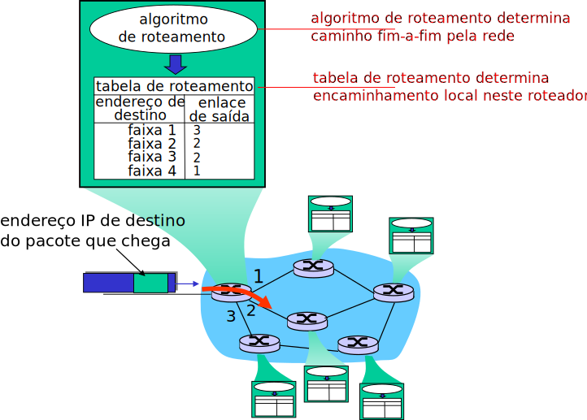

Obtém configuração dinamicamente diretamente de um servidor.
“plug-and-play”.
DHCP: Dynamic Host Configuration Protocol
Objetivo: permitir que host dinamicamente obtenha seu endereço IP de um servidor da rede quando se conecta a ela.
Endereços atribuídos pelo servidor em esquema de “empréstimo” (lease).
Dispositivo pode renovar sua lease durante o uso.
Permite reutilização de endereços (dispositivos só possuem endereço enquanto conectados à rede/ligados).
Dá suporte a usuários móveis que querem se conectar a rede.
Visão geral do DHCP:
Host envia mensagem do tipo “DHCP discover” em broadcast [opcional].
Servidor DHCP responde com um “DHCP offer”[opcional].
Host requisita endereço IP com mensagem “DHCP request”.
Servidor DHCP envia endereço com mensagem “DHCP ack”.
Cenário de Cliente-Servidor DHCP
DHCP: Interação Típica
DHCP: Mais que Apenas Endereços IP
DHCP pode retornar mais que apenas um endereço IP adequado para aquela sub-rede.
Endereço IP do roteador de primeiro salto.
Também chamado de gateway padrão.
Nome e endereço IP do servidor DNS local.
Máscara de sub-rede.
...
DHCP: Exemplo (I)
Laptop se conecta à rede e precisa do seu endereço IP, endereço do roteador de primeiro salto, endereço do servidor DNS: utilizar DHCP.
Requisição DHCP encapsulada em UDP, encapsulado em IP, encapsulado em 802.3 (Ethernet).
Quadro Ethernet enviado em broadcast na rede local, recebido (em particular) no roteador rodando o servidor DHCP.
Ethernet demultiplexado para IP, demultiplexado para UDP, demultiplexado para DHCP.
DHCP: Exemplo (II)
Servidor DHCP formula um DHCP Ack contendo o endereço IP do cliente, endereço do roteador de primeiro salto, nome e endereço do servidor de DNS.
Mensagem é encapsulada e enviada para o cliente.
Cliente passa a saber seu endereço IP, endereço do servidor DNS, endereço IP do roteador de primeiro salto.
DHCP: Saída de Captura do Wireshark
Endereçamento Hierárquico
Endereçamento IP: Como Obter Um?
Pergunta: como a rede obtém seus endereços?
i.e., seu prefixo.
Resposta: é alocada uma porção do espaço de endereços do seu ISP.
Uma sub-rede menor, contida na sub-rede do ISP, é alocada.
Exemplo:
Bloco do ISP
11001000 00010111 00010000 00000000
200.23.16.0/20
Organização 1
11001000 00010111 00010000 00000000
200.23.16.0/23
Organização 2
11001000 00010111 00010010 00000000
200.23.18.0/23
Organização 3
11001000 00010111 00010100 00000000
200.23.20.0/23
...
...
...
Organização 7
11001000 00010111 00011110 00000000
200.23.30.0/23
Endereçamento Hierárquico: Agregação de Rotas (I)
Endereçamento hierárquico permite o anúncio eficiente de informações de roteamento.
Endereçamento Hierárquico: Agregação de Rotas (II)
Suponha que a organização 1 mude de ISP, mas queira manter seus endereços.
Agora, o ISPs-R-Us tem rota mais específica para organização 1.
Endereçamento hierárquico + casamento por prefixo mais longo.
Endereçamento IP: Última Palavra...
Pergunta: como um ISP obtém um bloco de endereços?
Resposta: ICANN: Internet Corporation for Assigned Names and Numbers.
http://www.icann.org/
Aloca endereços.
Gerencia DNS.
Atribui nomes de domínios, resolve disputas.
NAT
NAT: Network Address Translation
Todos os datagramas deixando a rede local possuem o mesmo único endereço de origem: 138.76.29.7.
Diferenciação através do número de porta de origem.
Datagramas com origem ou destino nesta rede possuem endereços de origem, destino da sub-rede 10.0.0/24.
NAT: Motivação
Rede local pode utilizar um único endereço, do ponto de vista do mundo externo.
Não é necessária uma faixa de endereços do ISP: um único endereço IP para todos os dispositivos.
Pode-se alterar os endereços dos dispositivos locais sem notificação ao mundo externo.
Pode-se mudar de ISP sem que os endereços dos dispositivos locais sejam alterados.
Dispositivos dentro da rede local não são explicitamente endereçáveis, visíveis ao mundo externo.
Um (pequeno) benefício de segurança.
NAT consegue lidar com a escassez de endereços IPv4.
NAT: Implementação
Um roteador que realiza NAT precisa:
Datagramas que saem:substituir(IP de origem, porta de origem) de cada datagrama para (IP do roteador, nova porta de origem).
Nó remoto respoderá utilizando (IP roteador, nova porta de origem) como destino.
Armazenar (na tabela NAT) todo mapeamento feito entre (IP de origem, porta de origem) e (IP roteador, nova porta de origem).
Datagramas que chegam:substituir(IP roteador, nova porta de origem) nos campos de destino do pacote por (IP de origem, porta de origem) armazenado na tabela NAT.
NAT: Exemplo
NAT: Análise
Campo de número de porta: 16 bits.
65000 conexões simultâneas usando um único endereço IP!
NAT é controverso:
Roteadores só deveriam processar até a camada 3 (camada de rede).
NAT viola o argumento fim-a-fim.
Muitas vezes, o NAT precisa ser levado em consideração por projetistas de aplicações, e.g., aplicações P2P.
Escassez de endereços deve ser resolvida pela adoção do IPv6.
NAT Traversal (I)
Cliente quer se conectar ao servidor com endereço 10.0.0.1.
Endereço 10.0.0.1 local para a LAN (cliente não pode usá-lo como endereço de destino).
Apenas um endereço visível externamente: 138.76.29.7.
Solução 1: configurar NAT estaticamente para encaminhar conexões que chegam para uma dada porta para o servidor.
e.g., (138.76.29.7, porta 2500) sempre é traduzido (e encaminhado) para (10.0.0.1, porta 25000).
NAT Traversal (II)
Solução 2:Internet Gateway Device Protocol (IGD).
Parte do Universal Plug and Play (UPnP).
Permite que host atrás de NAT:
Aprenda endereço IP público (138.76.29.7).
Adicione/remova mapeamentos de porta (com tempos de lease).
i.e., automatizar configuração estática dos mapeamentos do NAT.
NAT Traversal (III)
Solução 3:relaying (usado, por exemplo, no Skype).
Cliente atrás do NAT estabelece conexão com host intermediário.
Cliente externo se conecta ao mesmo host intermediário.
Host intermediário (relay) faz a ponte entre pacotes das duas conexões.
ICMP
ICMP: Internet Control Message Protocol
Usado por hosts e roteadores para comunicar informações no nível de rede.
Mensagem ICMP: tipo, código, além dos primeiros 8 bytes do datagrama IP que causaram o erro.
Tipo
Código
Descrição
0
0
echo reply
3
0
Rede de destino inalcançável
3
1
Host de destino inalcançável
3
2
Protocolo de destino inalcançável
3
3
Porta de destino inalcançável
3
6
Rede de destino desconhecida
3
7
Host de destino desconhecido
4
0
Source quench (controle de congestionamento, não usada)
8
0
echo request
9
0
anúncio de rota
10
0
descoberta de rota
11
0
TTL expirado
12
0
Cabeçalho IP com erros
Traceroute e ICMP
Origem envia série de segmentos UDP para o destino.
Primeiro com TTL = 1.
Segundo com TTL = 2, etc.
Utiliza porta de destino pouco provável.
Quando n-ésimo conjunto de datagramas chega ao n-ésimo roteador:
TTL expira, roteador descarta datagrama.
Envia mensagem ICMP reportando erro à origem (tipo 11, código 0).
Mensagem ICMP inclui nome e endereço IP do roteador.
Quando mensagem ICMP chega, origem registra o RTT.
Critério de parada:
Segmento UDP eventualmente chega ao destinatário.
Destinatário envia mensagem ICMP do tipo “porta inalcançável” (tipo 3, código 3).
Origem para.
IPv6
IPv6: Motivação
Motivação inicial: espaço de endereçamento de 32 bits será esgotado em breve.
i.e., todos os endereços serão alocados.
Motivações adicionais:
Formato do cabeçalho facilita e acelera o processamento/encaminhamento.
Alterações no cabeçalho para facilitar QoS.
Formato do datagrama IPv6:
Cabeçalho de tamanho fixo, com 40 bytes.
Não permite fragmentação.
IPv6: Formato do Datagrama
pri: identifica prioridade do datagrama em relação a outros gerados pela mesma origem.
flow label: identifica datagramas pertencentes a um mesmo “fluxo” (conceito de fluxo não é bem definido).
next header: identifica protocolo para a carga útil do pacote.
Outras Mudanças em Relação ao IPv4
Checksum: completamente removido para reduzir tempo de processamento em cada salto.
Opções: permitidas, mas fora do cabeçalho, indicado pelo valor do campo next header.
ICMPv6: nova versão do ICMP.
Tipos de mensagem adicionais, e.g., “Pacote Muito Grande”.
Funções de gerenciamento de grupos multicast.
Transição do IPv4 para o IPv6
Impossível atualizar todos os roteadores do mundo simultaneamente.
Não existe um “dia oficial de migração”.
Como a rede pode operar com roteadores IPv4 e IPv6 misturados?
Tunelamento: datagramas IPv6 carregados como carga útil em datagramas IPv4 encaminhados por roteadores IPv4.
Tunelamento
Tunelamento
IPv6: Adoção
Estimativas do US National Institute of Standards [2013]:
~3% dos roteadores IP da indústria.
~11% dos roteadores do governo americano.
Tempo (muito!) longo para implantação, uso.
20 anos e contando!
Pense nas mudanças no nível de aplicação nos últimos 20 anos: web, facebook, Netflix, ...
Por quê?
Roteamento: Introdução
Sinergia entre Roteamento e Encaminhamento

Abstração de Grafo
Grafo: G = (N, E).
N = conjunto de roteadores = {u, v, w, x, y, z}.
E = conjunto de enlaces = {(u,v), (u,x), (v,x), (v,w), (x,w), (x,y), (w,y), (w,z), (y,z)}
Nota
Grafos são uma abstração útil em outros contextos de redes de computadores, e.g., P2P, onde N é o conjunto de pares e E é o o conjunto de conexões TCP.
Abstração de Grafo: Custos
\(c(x, x^\prime) = \) custo do enlace \((x, x^\prime)\).
e.g., \(c(w, z) = 5\).
Custo pode ser sempre 1, ou inversamente proporcional à banda, ou inversamente proporcional ao congestionamento.
Custo de um caminho \((x_1, x_2, x_3, ..., x_p) = c(x_1, x_2) + c(x_2, x_3) + ... + c(x_{p-1{}}, x_p)\)
Pergunta chave: qual é o caminho de custo mínimo entre u e z?
Algoritmo de roteamento: algoritmo que encontra o caminho de custo mínimo.
Classificação de Algoritmos de Roteamento
Perguta: informação global ou decentralizada?
Global:
Todos os roteadores tem visão completa da topologia, custos de enlaces.
Algoritmos baseados em “Estado de Enlace”.
Link State, em inglês.
Decentralizada:
Roteador conhece vizinhos fisicamente conectados por enlaces, custos dos enlaces para vizinhos.
Processo iterativo de computação, troca de informação com vizinhos.
Algoritmos baseados em “Vetor de Distâncias”.
Distance Vector, em inglês.
Pergunta: estático ou dinâmico?
Estático: rotas mudam pouco com o tempo.
Dinâmico: rotas mudam rapidamente.
Em resposta a mudanças nos custos dos enlaces.
Atualização periódica.
Pergunta: pró-ativo ou reativo?
Pró-ativo: rotas encontradas antes de serem necessárias.
Reativo: rotas encontradas sob demanda.
Algoritmos Baseados em Estado de Enlaces
Um Algoritmo de Roteamento Baseado em Estado de Enlaces
Algoritmo de Dijkstra:
Topologia da rede, custos dos enlaces conhecidos por todos os nós.
Conseguido através da difusão do “estado dos enlaces”.
Todos os nós tem a mesma informação.
Ou deveriam ter.
Computa caminho de custo mínimo de um nó (“origem”) para todos os outros nós.
Resulta na tabela de roteamento para aquele nó.
Iterativo: depois de k iterações, conhece o caminho mínimo para k destinos.
Notação:
\(c(x,y)\): custo do enlace do nó x para nó y.
infinito, se x e y não são vizinhos.
\(D(v)\): custo atualmente conhecido para o caminho da origem até v.
\(p(v)\): predecessor de v no caminho da origem para v.
\(N^\prime\): conjunto de nós para os quais definitivamente conhecemos o melhor custo.
Algoritmo de Dijkstra
1
\(N^\prime \leftarrow \{u\}\)
// Caminho para origem é trivial
2
\(\forall v \in N\)
// Para os demais nós
3
se\((u, v) \in E\)
// É vizinho da origem?
4
então\(D(v) \leftarrow c(u,v)\)
// Conhecemos um caminho
5
senão\(D(v) = \infty\)
// Ainda sem caminho
6
7
Repita
// Loop principal
8
Encontre \(w \not\in N^\prime\) tal que D(w) seja mínimo
// Melhor caminho provisório
9
\(N^\prime\leftarrow N^\prime\cup\{w\}\)
// Se torna definitivo
10
\(\forall v\) tal que \(v \not\in N^\prime \land (w, v) \in E\)
// Vizinhos de w ainda provisórios
11
\(D(v) \leftarrow min(D(v), D(w) + c(w, v))\)
// Anterior ou passando por w?
12
Até que \(N^\prime = N\)
// Até adição de todos os nós
Algoritmo de Dijkstra: Exemplo
\(D(v)\)
\(D(w)\)
\(D(x)\)
\(D(y)\)
\(D(z)\)
Passo
\(N^\prime\)
\(p(v)\)
\(p(w)\)
\(p(x)\)
\(p(y)\)
\(p(z)\)
0
u
7,u
3,u
5,u
\(\infty\)
\(\infty\)
1
uw
6,w
5,u
11,w
\(\infty\)
2
uwx
6,w
11,w
14,x
3
uwxv
10,v
14,x
4
uwxvy
12,y
5
uwxvyz
Notas
Constrói uma árvore de caminhos de custo mínimo percorrendo predecessores.
Podem existir empates. Critério de desempate é arbitrário.
Algoritmo de Dijkstra: Outro Exemplo (I)
Passo
\(N^\prime\)
\(D(v),p(v)\)
\(D(w),p(w)\)
\(D(x),p(x)\)
\(D(y),p(y)\)
\(D(z),p(z)\)
0
u
2,u
5,u
1,u
\(\infty\)
\(\infty\)
1
ux
2,u
4,x
2,x
\(\infty\)
2
uxy
2,u
3,y
4,y
3
uxyv
3,y
4,y
4
uxyvw
4,y
5
uxyvwz
Algoritmo de Dijkstra: Outro Exemplo (II)
Árvore de caminhos de menor custo formada a partir de u:
Tabela de roteamento resultante:
Destino
Enlace
v
(u,v)
x
(u,x)
y
(u,x)
w
(u,x)
z
(u,x)
Algoritmo de Dijkstra: Discussão
Complexidade do algoritmo: com \(n\) nós.
Cada iteração: verifica todos os possíveis nós \(w \not\in N^\prime\).
\(\frac{n(n+1)}{2}\) comparações: \(O(n^2)\).
Implementações mais eficientes são possíveis: \(O(n\cdot log\;n)\).
Podem ocorrer oscilações:
e.g. custos dos enlaces iguais a quantidade de tráfego transportado: